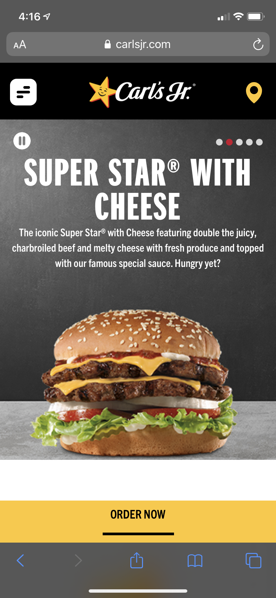
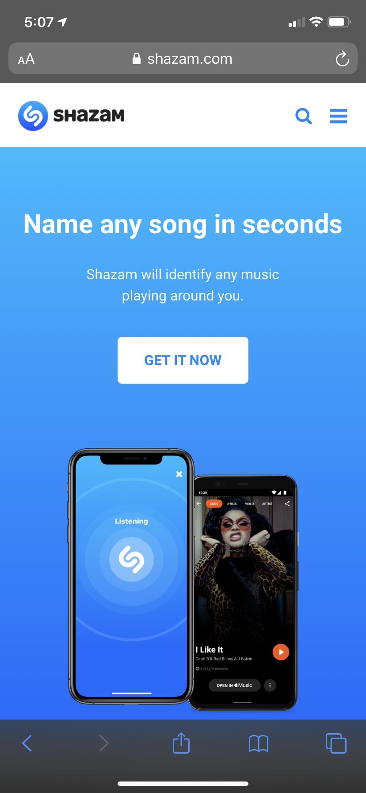
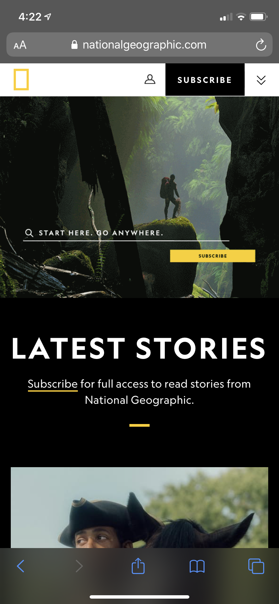

Visual Hierarchy
Carl's Jr.
The image that this company chose to use exemplifies visual hierarchy. The image that catches your attention immediately is the burger. From there it leads you to the clever name of the burger to help you remember it more. After, it gives you a brief description of the burger if you are still interested. It then finishes with a background that doesn't clash with the intention of the pictures which is the delicious looking burger.
Fitt's Law
Shazam
This image depicts the Shazam website and emphasizes the center button entitled "Get It Now". The reason for this is that Shazam works better as a mobile application to where the app will listen to a song and immediately give you the song title. The picture is an example of Fitt's Law because the button for the website and the application shown under is placed at a position to where your thumb can easily press it. The button for both the website and the app are perfect size and not too flashy to put off the user.
Rule of Thirds
National Geographic
This picture demonstrates the Rule of Thirds because if you were to place the specific grid lines over the image, you will see that each section is balanced. If each section is balanced, that will mean that the picture as a whole is visually appealing and will catch the attention of the user. Companies and organizations will use this tactic to intrigue potential consumers into buying their product or service.